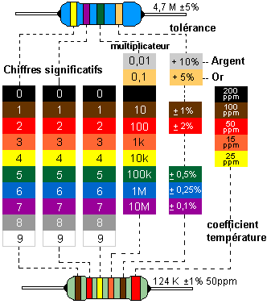

Seconde générale et technologique
Thème 1 : Constitution de la matière de l'échelle macroscopique à l’échelle microscopique
1. Corps purs et mélanges au quotidien
Activité expérimentale 1.1.1 : Solidification de l'eau distillée et de l'eau salée 
En hiver, pour éviter la formation de gel sur les routes et permettre aux automobilistes de rouler sans crainte,
on déverse des tonnes de sel sur la route.
Problématique : Pourquoi l'ajout de sel permet-il de limiter l'apparition du verglas ?
Attendus : les élèves réalisent deux expériences en mesurant la température de l'eau et celle de l'eau salée au cours du temps. Puis ils tracent l’évolution au cours du temps de la température de l’eau distillée, puis de l’eau salée afin d'identifier un palier de solidification à 0 °C ou pas de palier.
Piste pour Python : Leur demander de tracer l’évolution au cours du temps de la température de l’eau distillée et de l’eau salée à l'aide d'un programme Python fourni.
- Ecrire un programme traçant un graphique contenant ces deux courbes. Voici les 2 séries de mesures relevées ici
Exercice 1.1.1 : Corps pur ou mélange 
Préciser s'il s'agit d'un corps pur ou d'un mélange : Jus d'orange, Charbon, Acier, Or, Eau de javel.
- Ecrire un programme contenant une liste corps purs et une autre liste mélange et les afficher.
Exercice 1.1.2 : Etat physique de l'acide citrique 
La température d'ébullition de l'acide citrique vaut 310°C et sa température de fusion vaut 153°C. Dans quel état physique se trouve t-il à 0°C, à 20°C, à 100°C ?
- Ecrire un programme avec des structures conditionnelles déterminant dans quel état physique se trouve une espèce chimique selon sa température d'ébullition et de fusion.
Exercice 1.1.3 : Masse volumique du mercure
Une canette de soda de 33 cL est remplie de mercure liquide de masse volumique de 13,5 kg/L.
- Ecrire un programme qui calcule et affiche la masse du mercure liquide dans la canette.
Exercice 1.1.4 : Produits Ménagers
Il existe de très nombreux produits ménagers. Le vinaigre ménager, utilisé pour détartrer les robinetteries et les carrelages, contient de l'eau (H2O) et 14 % d'acide acétique (C2H4O2). L'alcool à brûler, utilisé pour nettoyer les vitres, est constitué d'éthanol (C2H6O), de méthanol (CH4O) et d'eau (H2O). L'ammoniaque, utilisée pour raviver les couleurs des tapis, est une solution qui contient de l'ammoniac (NH3) dissous dans l'eau (H2O). L'eau déminéralisée, utilisée pour éviter les dépôts de calcaire dans les fers à repasser, ne contient plus de minéraux (ions).
- Ecrire un programme contenant un dictionnaire des produits ménagers cités ci-dessus avec la liste des espèces chimiques qu'ils contiennent.
- En utilisant une boucle, afficher pour chaque produit s'il s'agit d'un corps pur ou d'un mélange.
Exercice 1.1.5 : Composition de l'air
L’air est principalement constitué de 78,08 % de diazote, de 20,95 % de dioxygène et 0.97 % d'autres gaz (Ar, CO2, Ne,...).
- Ecrire un programme permettant de visualiser la composition de l'air sous forme d'un diagramme circulaire.
Exercice 1.1.6 : Mélange à 2 phases
On introduit dans une éprouvette graduée 20 mL d'eau de densité 1 et 30 mL de cyclohexane de densité 0.779. Ces deux liquides sont incolores et non miscibles entre eux.
- Ecrire un programme avec une structure conditionnelle indiquant quel liquide est au-dessus de l'autre selon leur densité.
Exercice 1.1.7 : Densité des métaux
La masse volumique du zinc solide est ρzinc = 7,13 g·cm-3, celle du cuivre solide est ρcuivre = 8 960 kg·m-3 et celle du fer ρfer = 7,87 kg·dm-3. On donne la masse volumique de l'eau : ρeau = 1,00 g·cm-3.
- Ecrire un programme avec une fonction permettant de convertir ces masses volumiques en g.cm-3 et d'en déduire leur densité
Exercice 1.1.8 : Température de fusion
On mesure au cours du temps la température d'un liquide X dans un cristallisoir contenant un mélange réfrigérant.
Voici le relevé :
- Temps (en s) : 0;1;2;3;4;5;6;7;8;9;10;11;12;13;14;15;16;17;18;19;20;
- Température (en °C) : 18;16;14;12;10;8;6.5;6.5;6.5;6.5;5;4;3;2;1;0;-1;-2;-3;-4;
Température de fusion de quelques corps purs : θf,eau = 0 °C ; θf,ethanol = -114 °C ; θf,cyclohexane = 6,5 °C ; θf,ether = -116 °C ; θf,pentan−3−ol = -8°C ; θf,benzene = 5,5 °C ; θf,methanamide = 2,5 °C.
- Ecrire un programme traçant l'évolution de la température du liquide en fonction du temps et identifier le liquide correspondant.
Exercice 1.1.9 : Pourcentage volumique d'un gaz
Le trimix est un mélange de gaz utilisé pour la plongée.
Pour une bouteille de 12 kg :
- masse de dioxygène : 3,3 kg ;
- masse d'hélium : 0,600 kg ;
- masse de diazote : 8,1 kg.
Masse volumique du gaz à pression atmosphérique :
- ρ(O2) = 1,33 g·L-1 ;
- ρ(N2) = 1,17 g·L-1 ;
- ρ(He) = 0,17 g·L-1 ;
- Ecrire un programme avec une boucle permettant de calculer le pourcentage en volume de chaque gaz dans le trimix.
Exercice 1.1.10 : Etat physique des espèces chimiques
| Espèce chimique | Température de fusion (°C) | Température d'ébullition (°C) |
|---|---|---|
| Cyclohexane | 6,5 | 81 |
| Eau | 0 | 100 |
| Éthanol | -114 | 79 |
| Méthane | -182,5 | -161,5 |
| Acétone | -94,6 | 56 |
| Sel | 801 | 1465 |
- Ecrire un programme avec une boucle indiquant, pour chaque espèce chimique, l'état physique dans lequel elle se trouve à 20°C et à 120°C.
Exercice 1.1.11 : Masse, Volume, Masse volumique et Densité
| Masse (g) | Volume(cm3) | Masse volumique (g/L) | Densité |
|---|---|---|---|
| 20 | 20 | ||
| 39.5 | 50 | ||
| 25 | 0.71 | ||
| 40 | 1025 |
- Compléter les valeurs manquantes du tableau ci-dessus en écrivant un programme qui permet à un utilisateur de calculer une masse, un volume, une masse volumique ou une densité. Le programme demande à l'utilisateur de choisir ce qu'il veut calculer, puis à partir de quelles grandeurs physiques, puis il entre les deux valeurs et le script affiche alors le résultat.
Exercice 1.1.12 : Solubilité
La solubilité dans l'eau à 20°C du diode vaut 330 mg·L-1 et celle de l'iodure de potassium vaut 1430 g·L-1.
- Ecrire un programme avec une fonction permettant de calculer la masse maximale de diiode et d'iodure de potassium pouvant être dissout dans 25 mL d'eau.
Exercice 1.1.13 : Masse volumique d'un euro
La pièce d'un euro est constituée d'un disque central de 3,80 g dans un alliage de cupro-nickel
(75 % de cuivre en masse et 25 % de nickel). La couronne, plus jaune, est en maillechort
(alliage de cuivre, nickel et zinc). La pièce a un diamètre de 23,25 mm, et une épaisseur de 2,125 mm,
pour une masse de 7,50 g.
Masses volumiques : ρcuivre = 9,0 g·cm-3 ; ρnickel = 8,9 g·cm-3 ;
Volume d'un cylindre de rayon R et de hauteur h : V = πR2h
- Ecrire un programme permettant de :
- calculer la masse volumique du disque central.
- calculer le rayon du disque central.
- calculer la masse volumique du maillechort.
2. Les solutions aqueuses, un exemple de mélange.
Activité expérimentale 1.2.1 : Masse de sucre dans le coca-cola
Le sucre est très présent dans de nombreuses boissons gazeuses, en particulier le coca-cola. C’est le soluté largement majoritaire. Lorsque la boisson est dégazée, on peut la considérer comme une solution aqueuse sucrée.
Problématique : Comment vérifier expérimentalement la composition en sucre du Coca-Cola ?
Attendus : les élèves préparent différentes solutions aqueuses (eau + sucre) à différentes concentrations. Puis, ils tracent une courbe d'étalonnage de la masse volumique des solutions en fonction de la concentration massique en sucre. A partir de la masse volumique du coca-cola et de la courbe d'étalonnage, ils en déduisent la concentration en masse de sucre dans le coca-cola.
Piste pour Python : Leur demander de tracer la courbe d'étalonnage sous python et par lecture graphique, déterminer la concentration massique de sucre dans le coca-cola.
- Ecrire un programme permettant de tracer la courbe d'étalonnage de la masse volumique des solutions en fonction de leur concentration massique en sucre et d'obtenir par lecture graphique la concentration massique de sucre dans le coca-cola. Voici les mesures brutes d'un élève ici
Exercice 1.2.1 : Concentration massique de l'aspirine
On dissout un comprimé contenant 500 mg d'aspirine dans 200 mL d'eau.
- Ecrire un programme permettant de calculer la concentration en masse d'aspirine.
Exercice 1.2.2 : Masse de la ferritine
La ferritine est une protéine essentielle dans le stockage du fer. Chez un homme, sa concentration doit être comprise entre 30 et 300 μg/L. Le corps d'un homme moyen contient environ 6,0 L de sang.
- Ecrire un programme donnant un encadrement de la masse de ferritine que contient un corps moyen.
Exercice 1.2.3 : Concentration massique de sucre
Une canette de 33 cL de soda contient l'équivalent de six morceaux de sucre. Un morceau de sucre a une masse de 6,0 g. Une bouteille de 500 mL de thé glacé contient 45 g de sucre.
- Ecrire un programme permettant de déterminer les concentrations en sucre de chacune de ces boissons et d'en déduire laquelle a le goût le plus sucré.
Exercice 1.2.4 : Concentration massique en liquide vaisselle
Recette des bulles de savon :
- 4 cuillères à café de produit vaisselle ;
- 1 cuillère à café de sucre en poudre ;
- 2 cuillères à café de glycérine ;
- 1 verre d'eau (25 cL).
Données : Une cuillère à café représente environ 5 mL.
ρliquide vaisselle = 1,04 g/mL ; ρsucre = 1,6 g/mL ; ρglycerine = 1,26 g/mL.
- Ecrire un programme permettant de déterminer la concentration en liquide vaisselle (en g·L-1) du liquide à bulles.
Exercice 1.2.5 : Facteur de dilution
En homéopathie, le facteur de dilution F s'exprime en CH tel que F = a CH = 102a.
- Ecrire un programme avec une fonction permettant de déterminer le facteur de dilution. Tester pour 3 CH.
Exercice 1.2.6 : Volume de l'eau de mer
L'eau de mer contient une concentration en or de l'ordre de 5,0 × 10-12 kg·L-1.
- Ecrire un programme calculant le volume d'eau de mer nécessaire pour fabriquer une bague de 3,5 g en or jaune (75% d'or pur).
Exercice 1.2.7 : Incertitude sur la concentration massique
On prépare une solution aqueuse de sulfate de fer en dissolvant 0,50 g de sulfate de fer avec de l'eau dans une
fiole de 100,0 mL. La balance utilisée a une incertitude à ± 0,01 g. Le volume de la fiole est garanti à ± 0,2 mL.
L'incertitude sur la concentration est donnée par la relation suivante :
\(U(\gamma)=\gamma\sqrt{\Big(\frac{U(m)}{m}\Big)^2+\Big(\frac{U(V)}{V}\Big)^2}\)
- Ecrire un programme permettant de calculer l'incertitude sur la concentration.
Exercice 1.2.8 : Incertitude sur la concentration d'une solution fille
On souhaite diluer 20 fois une solution commerciale de soude (hydroxyde de sodium) à (10 ± 1) g·L-1.
On dispose d'une fiole jaugée de (200,0 ± 0,2) mL et d'une pipette de (10 ± 0,04) mL. L'incertitude sur la
concentration de la solution fille est donnée par la relation suivante :
\(U(\gamma_{fille})=\gamma_{fille}\sqrt{\Big(\frac{U(\gamma_{mere})}{\gamma_{mere}}\Big)^2+\Big(\frac{U(V_{mere})}{V_{mere}}\Big)^2+\Big(\frac{U(V_{fille})}{V_{fille}}\Big)^2}\)
- Ecrire un programme permettant de calculer l'incertitude sur la concentration de la solution fille.
3. Du macroscopique au microscopique, de l’espèce chimique à l’entité.
Activité expérimentale 1.3.1 : Entités dans un échantillon de matière
La matière est constituée d’entités chimiques invisibles à l’œil nu mais bien réelles à l’échelle microscopique. Selon les cas, elle est composée d’atomes, de molécules ou d’ions.
Problématique : Comment faire pour compter ces milliards d’entités chimiques ?
Attendus : les élèves proposent un protocole permettant de compter combien de grains de lentilles y a-t-il dans un sac de 500 g de lentilles du commerce. Puis ils tracent un histogramme, calculent la moyenne, l'écart-type et l'incertitude de type A.
Piste pour Python : Leur demander de tracer un histogramme du nombre de lentilles dans un sac de 500g et de calculer la moyenne, l'écart-type et l'incertitude de type A avec un programme python fourni.
- Ecrire un programme permettant de tracer un histogramme du nombre de lentilles dans un sac de 500g et de calculer la moyenne, l'écart-type
et l'incertitude de type A.
Voici les mesures de masses effectuées pour 50 lentilles environ avec 18 groupes d'élèves ici
Exercice 1.3.1 : Cation et Anion
Parmi les ions suivants : Ca2+, F-, H+, Al3+, SO42- ,identifier les cations et les anions
- Aprés avoir indiqué la charge de chaque ion, écrire un programme qui précise si l'ion est un anion ou un cation
4. Le noyau de l’atome, siège de sa masse et de son identité.
Exercice 1.4.1 : Composition d'un atome
Le noyau d'un atome d'aluminium a pour notation symbolique : \(_{13}^{27}Al\)
- Ecrire un programme avec une fonction ayant pour arguments l'élément, le nombre de masse et le numéro atomique et affiche en sortie la composition de l'atome (nombre de neutrons, de protons et d'électrons). Tester avec l'aluminium.
Exercice 1.4.2 : Masse d'un atome
Un atome de francium a pour notation symbolique : \(_{87}^{223}Fr\)
Données : mnucleons=1.67×10−27kg
- Ecrire un programme avec une fonction ayant pour arguments l'élément et le nombre de masse qui calcule en sortie la masse d'un noyau. Tester avec le francium.
Exercice 1.4.3 : Nombre de nucléon
Un atome de silicium (Z=14) a une masse m=4,68×10−26kg
Données : mnucleons=1.67×10−27kg
- Ecrire un programme permettant de calculer le nombre de nucléons dans le noyau.
5. Le cortège électronique de l’atome définit ses propriétés chimiques.
Exercice 1.5.1 : Numéro atomique et configuration électronique
Données : Le carbone (Z=6) a pour configuration électronique 1s2 2s2 2p2.
- Ecrire un programme permettant de passer du numéro atomique à la configuration électronique et vice versa pour (\(Z\leq20\)). Tester avec le carbone.
Exercice 1.5.2 : Configuration électronique et couche de valence
Données : Le carbone (Z=6) a pour configuration électronique 1s2 2s2 2p2 et possède 4 électrons de valence sur sa couche de valence de numéro 2
- Ecrire un programme permettant de passer de la configuration électronique au nombre d'électrons de valence et au numéro de la couche de valence et vice versa pour (\(Z\leq20\)). Tester avec le carbone.
Exercice 1.5.3 : Position et couche de valence
Données : Le carbone (Z=6) possède 4 électrons de valence sur sa couche de valence de numéro 2. Il se situe à la période 2 et à la colonne 14.
- Ecrire un programme permettant de passer de la position d'un élément au nombre d'électrons de valence et au numéro de la couche de valence et vice versa pour (\(Z\leq20\))
6. Vers des entités plus stables chimiquement.
Exercice 1.6.1 : Ions monoatomiques
Données : Le carbone (Z=6) possède 4 électrons de valence sur sa couche de valence de numéro 2. Il se situe à la période 2 et à la colonne 14.
- Ecrire un programme permettant de déterminer la charge électrique d’ions monoatomiques courants à partir de la position de leur élément dans le tableau périodique (uniquement pour la colonne 1, 2, 16, 17 et 18).
7. Compter les entités dans un échantillon de matière.
Exercice 1.7.1 : Masse d'une molécule
Données : m(H)=0,167×10−26kg ; m(O)=2,66×10−26kg ; (C)=1,99×10−26kg ;
- Ecrire un programme permettant de calculer la masse d'une molécule de sorbitol C6H14O6
Exercice 1.7.2 : Quantité de matière 1
Données : m(H)=1,67×10−27kg ; m(O)=2,66×10−26kg ; ρeau=1,0 kg·L-1 ; NA=6,02×1023mol-1.
- Ecrire un programme permettant de calculer le nombre de moles d'atomes d'hydrogène et d'oxygène dans une bouteille de 1,5L d'eau
Exercice 1.7.3 : Quantité de matière 2
On souhaite préparer 100 mL d'une solution de sulfate de cuivre à 1,6 g·L-1. Données : m(S)=5.32×10−26kg ; m(O)=2,66×10−26kg ; m(Cu)=10.6×10−26kg ; NA=6,02×1023mol-1.
- Ecrire un programme permettant de calculer le nombre de moles d'atomes d'oxygène dans la solution
Thème 2 : Modélisation des transformations de la matière et transfert d’énergie
1. Transformation physique
Activité expérimentale 2.1.1 : Chaleur latente de l'eau
Aurélie souhaite faire cuire des œufs durs dans une casserole d'eau mais elle craint qu'il ne reste pas assez d'eau dans la casserole pour que les œufs soient recouverts si elle les laisse bouillir pendant 10 minutes.
Problématique : Quelle masse d'eau va se vaporiser pendant l'ébullition ?
Attendus : les élèves réalisent donc une expérience en mesurant la masse d’eau vaporisée et la durée d'ébullition avec un chronomètre et un thermoplongeur de 500 W en supposant que les pertes thermiques sont négligeables. Ils tracent alors la quantité d’énergie Q reçue par l’eau en appliquant la relation : \(Q = P.\Delta t\) en fonction de la masse et modélise les points par une fonction linéaire. La pente donne la chaleur latente de vaporisation L de l'eau tel que \(Q = m.L\)
Piste pour Python : Leur demander de tracer les points expérimentaux et de les modéliser par une fonction linéaire avec un programme python fourni.
- Ecrire un programme permettant de tracer la quantité d’énergie Q reçue par l’eau en fonction de la masse
d'eau vaporisé et de modéliser ces points expérimentaux par une fonction linéaire afin d'afficher la pente.
Voici les mesures effectuées avec un thermoplongueur de 500W pendant 10 min ici
Exercice 2.1.1 : Chaleur latente
Une couche de glace d'épaisseur 3,0 mm s'est déposée sur le pare-brise d'une voiture de 1,5 m de longueur sur 70 cm de largeur. Le conducteur souhaite enlever cette couche de glace. Données : ρeau liquide=1000 kg·m-3 ; ρeau solide=917 kg·m-3 ; Lfusion=334 kJ·kg-1
- Ecrire un programme permettant de calculer la quantité d'énergie à transférer pour réaliser le changement d'état en considérant que la couche de glace est à la température de 0 °C.
Exercice 2.1.2 : Volume de métal
L'aluminium est un métal solide à température ambiante (Tfusion=660 °C).
Données : ρAl=2,7×103 kg·m-3 ; Lfusion=399,6 kJ·kg-1
- Ecrire un programme permettant de calculer le volume de métal qu'on pourrait faire fondre à 660 °C en transférant une quantité d'énergie de 1,04×107 J.
2. Transformation chimique
Exercice 2.2.1 : Equation chimique d'une combustion complète
Soit l'équation d'une combustion complète suivante : a CxHyOz + b O2 ----> c CO2 + d H2O
- Ecrire un programme ayant une fonction permettant de déterminer les coefficients stoechiométriques a, b, c et d.
Exercice 2.2.2 : Réactif limitant
On brûle 50 g de méthane dans 250 g de dioxygène. Données : 1 mole de méthane pèse 16g et 1 mole de dioxygène pèse 32g.
- Ecrire un programme permettant d'afficher le nom du réactif limitant en fonction des quantités de matières initiales et des coefficients stoechiométriques dans une équation bilan de réaction.
3. Transformation nucléaire
Exercice 2.3.1 : Temps de demi-vie
Le temps de demi-vie de l'iode 131 est de 8 jours : cela correspond à la durée au bout de laquelle l'activité de l'iode 131 est divisée par 2. Lors de l'accident de Fukushima, une activité massique de 54 000 Bq/kg autour de 120km de la centrale nucléaire dans des champs de légumes a été mesurée. L'appareil de mesure a uen limite de détection de 50 Bq/kg
- Ecrire un programme permettant de tracer l'évolution de l'activité massique en Bq/kg en fonction du temps et en déduire au bout de combien de jours l'iode 131 n'est plus détectable par l'appareil.
Thème 3 : Décrire un mouvement
Activité expérimentale 3.1.1 : le shoot parfait au basket-ball
Lors d'un shoot, le joueur de basketball tire depuis la ligne de lancer franc. L'angle de lancement optimal par rapport à l'horizontal varie entre 50 et 55 degrés. Quant à la vitesse de tir, elle doit se situer aux alentours des 7 m⋅s-1.
Problématique : le joueur a t-il un shoot optimal ?
Attendus : les élèves réalisent un pointage vidéo d'un joueur entrain de tirer un lancer franc. Une fois obtenues les positions du ballon (x, y) en fonction du temps t. Les élèves obtiennent automatiquement les vecteurs vitesse avec le logiciel de pointage. Puis ils mesurent l'angle et la norme d'un des vecteurs vitesse juste aprés le lancer et comparent avec les valeurs optimales avant de conclure.
Piste pour Python : Leur demander de tracer les vecteurs vitesses sous Python afin d'obtenir l'angle et la norme du vecteur vitesse juste aprés le lancer. Un programme Python est bien sûr fourni.
- Ecrire un programme permettant de tracer des vecteurs vitesses à partir des positions (x,y) du ballon en fonction
du temps t. On définira aussi des fonctions permettant de calculer l'angle d'un vecteur avec l'horizontal et
la norme du vecteur afin de répondre à la problématique.
Voici les mesures relevées avec un pointage video ici
Activité expérimentale 3.1.2 : Balle de hockey sur gazon en chute libre vertical
Une balle de hockey sur gazon de 200g est lachée sans vitesse initiale à une certaine hauteur prise comme origine.
Problématique : Comment varie le vecteur vitesse de la balle ?
Attendus : les élèves réalisent un pointage vidéo de la balle et obtiennent la position de la balle y en fonction du temps t. Ils tracent ensuite les vecteurs vitesse et concluent que la direction et le sens du vecteur vitesse ne varie pas mais sa norme augmente jusqu'à atteindre une valeur limite.
Piste pour Python : Leur demander de tracer les vecteurs vitesses sous Python en leur fournissant le programme et de calculer aussi la norme des vecteurs vitesse.
- Ecrire un programme permettant de tracer des vecteurs vitesses à partir des positions (x,y) de la balle en fonction
du temps t et de calculer les normes des vecteurs vitesse.
Voici les mesures relevées avec un pointage video ici
Exercice 3.1.1 : Station spatiale internationale
La station spatiale internationale (ISS) est une station spatiale en orbite circulaire basse autour de la Terre.
Des astronautes internationaux y mènent des expériences de recherche scientifique en milieu spatial.
Située à une altitude d'environ 330 km, l'ISS effectue un tour complet en 93 minutes.
RTerre = 6370 km
- Ecrire un programme permettant de calculer la vitesse de la station et le nombre de tour qu'elle effectue en une journée.
Thème 4 : Modéliser une action sur un système
Exercice 4.1.1 : Poids d'un aigle
Un aigle a une masse de 5 kg. Donnée : g = 9.81 N/kg.
- Ecrire un programme permettant de calculer le poids de l'aigle.
Exercice 4.1.2 : Masse d'un globule
La masse d'un globule rouge est de 0,40 pN sur Terre. Donnée : g = 9.81 N/kg.
- Ecrire un programme permettant de calculer la masse du globule rouge en kg.
Exercice 4.1.3 : Poids sur différents astres
Un humain a une masse de 73 kg.
Donnée : gTerre = 9.81 N/kg ; gLune = 1.62 N/kg ; gMars = 3.71 N/kg ; gVenus = 8.87 N/kg
- Ecrire un programme permettant de calculer le poids de l'humain sur différents astres.
Exercice 4.1.4 : Force d'interaction gravitationnelle
Donnée : mJupiter = 1,90 × 1027 kg ; mSoleil = 1,99 × 1030 kg ; d= 7,79 × 108 km ; G= 6,67 × 10-11 N⋅m2⋅kg-2.
- Ecrire un programme permettant de calculer la force d'interaction gravitationnelle entre le soleil et jupiter.
Thème 5 : Principe d’inertie
Activité expérimentale 5.1.1 : Chute libre d'une balle de tennis
Amélie réalise un service au tennis en lançant la balle au-dessus d'elle et la frappe lorsqu'elle tombe. On considère que la balle est en chute libre verticale (soumis uniquement à son poids) dans le référentiel terrestre supposé galiléen. Sa masse est de 0.057 kg.
Problématique : Comment le poids influe sur le vecteur vitesse de la balle ?
Attendus : Les élèves réalisent un pointage vidéo de la balle lors de la montée et de la descente et obtiennent la position de la balle y en fonction du temps t. Ils tracent ensuite les vecteurs vitesse et le vecteur poids. Ils concluent alors que la valeur du vecteur vitesse diminue à la montée et augmente à la descente et que lorsque le poids s’oppose au sens du mouvement, le système ralentit alors que lorsqu'il va dans le même sens que le mouvement, le système accélère.
Piste pour Python : Leur demander de tracer les vecteurs vitesses et le poids sous Python en leur fournissant le programme et de calculer aussi la norme des vecteurs vitesse.
- Ecrire un programme permettant de tracer des vecteurs vitesses et le poids en différentes positions de la balle. Voici les mesures relevées avec un pointage video ici
Thème 6 : Émission et perception d’un son
Activité expérimentale 6.1.1 : Mesure de la vitesse du son dans l'air
Une des premières applications liées à la vitesse du son dans l’air se trouve sur les voitures : les petits « BIP » que nous entendons quand un obstacle se rapproche, proviennent d’un dispositif utilisant des ultrasons pour mesurer une distance. De même, les sous-mariniers, se repèrent dans la mer en utilisant des sonars. Ce sont des dispositifs qui utilisent également des sons ou des ultrasons pour calculer des distances.
Problématique : Comment mesurer la vitesse du son dans l'air ?
Attendus : A l'aide d'une carte d'acquisition les élèves mesurent, pour différentes distances entre un récepteur R1 et un récepteur R2, la différence de temps entre l’instant où le signal émis par un émetteur E est reçu par R1 et l’instant où ce même signal est reçu par R2. Ils en déduisent alors la vitesse du son dans l'air et la compare à la valeur théorique.
Piste pour Python : Leur demander de tracer un histogramme de la vitesse du son dans l'air et de calculer la moyenne, l'écart-type et l'incertitude de type A avec un programme python fourni.
- Ecrire un programme permettant de tracer un histogramme de la vitesse du son dans l'air et de calculer la
moyenne, l'écart-type et l'incertitude de type A.
Voici les mesures effectuées ici
Activité expérimentale 6.1.2 : Etude d'une mélodie avec un instrument de musique
Voici un fichier son de la mélodie au clair de la lune joué à la guitare à l'octave 3.
Problématique : Comment identifiés les notes de musiques de la mélodie ?
Attendus : Les élèves analyse le fichier son avec un logiciel afin de déterminer pour chaque partie du signal correspondant à une note, la période correspondante. Ils en déduisent alors la fréquence et donc la note correspondante
Piste pour Python : Leur demander d'analyser le fichier son et de déterminer graphiquement la période, la fréquence ainsi que la note de musique avec un programme python fourni.
- Ecrire un programme permettant de zoomer sur le signal temporel afin de mesurer graphiquement la période.
La fréquence est alors calculée et la note correspondante est déduite.
Voici le fichier son au format .wav ici
Exercice 6.1.1 : Période
Un son périodique a pour fréquence 120 Hz.
- Ecrire un programme permettant de calculer la période de ce signal.
Exercice 6.1.2 : Fréquence
Trois signaux sonores ont pour période : T1 = 0.16 s ; T2 = 1.8 × 10-2 ms ; T3 = 0.24 ms
- Ecrire un programme avec une boucle permettant de calculer la fréquence de ce signal et de préciser leurs domaines (ultrason, infrason et audible)
Exercice 6.1.3 : Durée de propagation
On lance un caillou dans l'eau. Le son se propage dans l'eau mais aussi dans l'air pour atteindre la rive situé à
une distance d = 154 m.
Célérité du son : dans l'air : vair = 340 m⋅s-1 ; dans l'eau : veau = 1 500 m⋅s-1.
- Ecrire un programme permettant de calculer la durée de propagation dans les deux milieux pour atteindre la rive.
Exercice 6.1.4 : Vitesse de propagation
La durée nécessaire pour qu'un son parcourt la distance d = 140 m est Δt= 0,42 s dans l'air.
- Ecrire un programme permettant de calculer la vitesse de propagation (en m/s et en km/h)
Exercice 6.1.5 : Distance d'un obstacle
Un capteur ultrason détecte un obstacle en émettant un signal qui est réceptionné par ce dernier 1.47 ms plus tard.
- Ecrire un programme permettant de calculer la distance à laquelle se trouve l'obstacle.
Thème 7 : Vision et image
Activité expérimentale 7.1.1 : Analyse spectrale d’une source de lumière 
Tout corps suffisamment chauffé émet de la lumière. En observant la lumière produite par ces sources avec un système dispersif (prisme ou réseau), nous obtenons un spectre d’émission. La lumière étant constituée d’une ou de plusieurs radiations, chaque radiation est caractérisée par une longueur d’onde qui s’exprime en nanomètre.
Problématique : Comment l'analyse d'une lumière peut-elle nous renseigner sur la nature de la source ?
Attendus : Les élèves observent à l’aide d’un spectroscope à réseau, différentes sources de lumières : lumière blanche, lampes spectrales, tube fluorescent, …. Pour chaque source, ils dessinent l’allure du spectre en identifiant la couleur et la longueur d’onde des radiations émises et indiquent s’il s’agit d’un spectre continu ou un spectre de raies.
Piste pour Python : Leur demander de représenter les spectres d'émission à l'aide d'un programme python fourni.
- Ecrire un programme permettant de représenter les spectres d'émission de chaque source.
Voici le relevé pour la lampe à mercure : 405 nm ; 435 nm ; 545 nm ; 575 nm ; 580 nm.
Activité expérimentale 7.1.2 : Etude de la réfraction
Lorsque la lumière passe d’un milieu à un autre, on dit qu’elle est réfractée : sa direction de propagation change. C’est le phénomène de réfraction qui est à l’origine des déformations apparentes que l’on constate lorsque l’on regarde par exemple un objet plongé dans l’eau.
Problématique : Comment décrire mathématiquement le phénomène de réfraction ?
Attendus : Les élèves doivent déterminer l’indice de réfraction du verre à l’aide de la loi de Snell- Descartes. Ils mesurent pour différents angles d'incidence i1 dans l'air (n=1), l'angle de réfraction i2 correspondant dans le verre. Puis ils tracent sin (i1) en fonction de sin (i2). La pente de la droite donne l'indice du verre.
Piste pour Python : Leur demander de tracer sin (i1) en fonction de sin (i2) afin de déterminer la pente avec un programme python fourni.
- Ecrire un programme permettant de tracer sin (i1) en fonction de sin (i2) et d'en déduire l'indice de réfraction
du verre.
Voici le fichier de mesures ici
Exercice 7.1.1 : Température en Kelvin et degrés Celcius
Donnée : T(K)=T(°C)+ 273,15.
- Ecrire un programme avec deux fonctions permettant de convertir des températures de K en °C et de °C à K.
Exercice 7.1.2 : Distance Terre-Soleil
La lumière met 8 minutes et 20 secondes à effectuer le trajet Terre-Soleil.
- Ecrire un programme permettant de calculer la distance Terre-Soleil en mètres.
Exercice 7.1.3 : Durée Terre-Mars
Dans un avenir plus ou moins proche, les astronautes seront capables d'effectuer un voyage interplanétaire jusqu'à Mars. Une fois là-bas, ils auront pour tâche de communiquer des rapports via l'émission d'ondes électromagnétiques. La distance la plus courte à parcourir par les ondes est de d= 5,57 × 107 km.
- Ecrire un programme permettant de calculer la durée de parcours de l'onde électromagnétique entre Mars et la Terre.
Exercice 7.1.4 : Modèle de Balmer
L'atome d'hydrogène, sous l'effet d'une excitation, peut émettre de la lumière sous forme de radiations monochromatiques dont les longueurs d'onde, dans le domaine du visible (entre 400 et 800 nm), se situent à :
| Numéro de la raie n | 1 | 2 | 3 | 4 |
|---|---|---|---|---|
| Longueur d'onde λ | 656,3 nm | 486,1 nm | 434,0 nm | 410,2 nm |
On note \(x=\frac{1}{(n+2)^2}\) et \(y = \frac{1}{\lambda}\).
- Ecrire un programme permettant de :
- tracer l'évolution de y en fonction de x en modélisant les points par une fonction affine.
- déterminer la longueur d'onde λ de la cinquième raie caractéristique (n= 5) et préciser si elle fait partie du domaine du visible.
Exercice 7.1.5 : Angle incidence
On observe un rayon réfracté dans l'eau (neau = 1,33) avec un angle de réfraction de 25°. Données : nair = 1 ; nhuile = 1.47
- Ecrire un programme permettant de calculer l'angle d'incidence dans l'air et dans l'huile
Exercice 7.1.6 : Indice de réfraction
Un rayon incident dans l'air (n1=1) est réfracté par un milieu d'indice n2 à déterminer. Données : i1 = 60° ; i2 = 21°
- Ecrire un programme permettant de calculer l'indice n2
Exercice 7.1.7 : Grandissement
Données : Grandissement : \(\gamma = \frac{\overline{A'B'}}{\overline{AB}}\)
- Ecrire un programme permettant de préciser si une image est renversée ou droite et agrandie ou réduite selon la valeur du grandissement.
Thème 8 : Signaux et capteurs
Activité expérimentale 8.1.1 : Caractéristique d'un dipôle ohmique
Chaque dipôle est caractérisé par une représentation graphique U = f(I) ou I = f(U) avec I l’intensité qui le parcourt et U la tension à ses bornes. C’est la caractéristique du dipôle, sorte de « carte d’identité » du composant.
Problématique : Comment tracer et exploiter graphiquement la caractéristique d’un dipôle ?
Attendus : Les élèves doivent mesurer la tension U et l'intensité I d'un courant traversant une résistance de valeur inconnue. Ils tracent la caractéristique U en fonction de I. Avec une modèle linéaire, ils vérifient la validité de la loi d'ohm et en déduisent la valeur de la résistance avec la pente de la droite et la compare avec la valeur mesurée à l'ohmètre.
Piste pour Python : Leur demander de tracer U en fonction de I et de déterminer la valeur de la résistance et son incertitude de type A avec un programme python fourni.
- Ecrire un programme permettant de tracer la tension U en fonction de I et de déterminer la valeur de la résistance ainsi que son incertitude de type A.
Voici le fichier de mesures ici
Activité expérimentale 8.1.2 : Etalonnage d'une thermistance
Les sondes de température utilisent des thermistances qui déclenchent des dispositifs de chauffage actuel en fonction de la température ambiante.
Problématique : Comment déterminer la température ambiante à l’aide d’une thermistance ?
Attendus : Les élèves doivent mesurer pour différentes températures de l'eau, la résistance de la thermistance. Ils tracent alors la courbe d'étalonnage de la thermistance (la résistance R en fonction de la température T) et en déduit à partir de la courbe la température de la pièce à l'aide de la thermistance.
Piste pour Python : Leur demander de tracer R en fonction de T avec un programme python fourni.
- Ecrire un programme permettant de tracer la résistance R en fonction de T.
Voici le fichier de mesures ici
Exercice 8.1.1 : Valeur d'une résistance
Voici le code couleur des résistances :

- Ecrire un programme permettant de donner la valeur d'une résistance (4 anneaux) à partir de la couleur des anneaux.